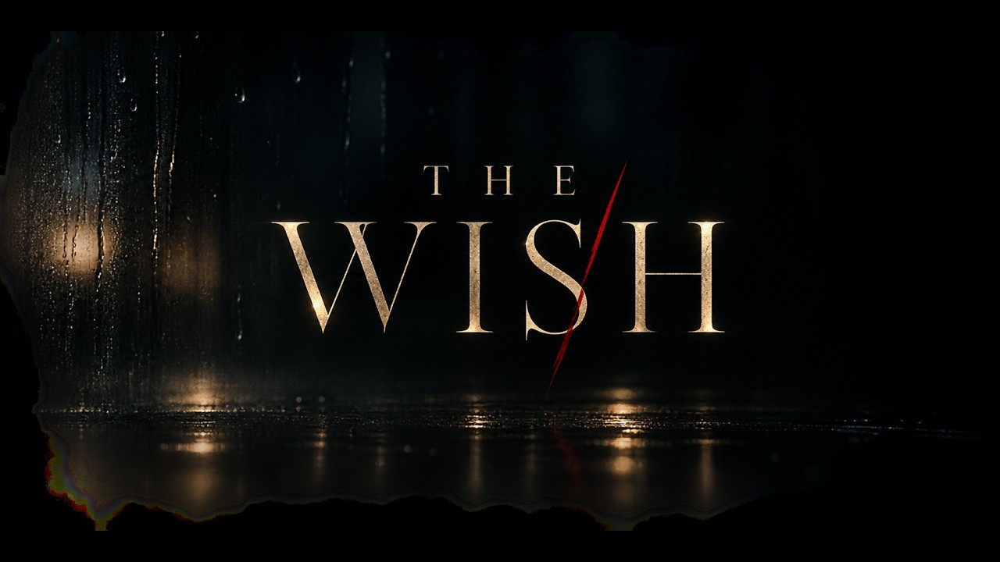

01 / Narrative / AI Short FilmNarrative / AI Short Film
THE WISH
Emily returns home on a rainy night and senses that something is wrong. As small details reveal what happened, she must confront the consequences of a wish she never spoke aloud.